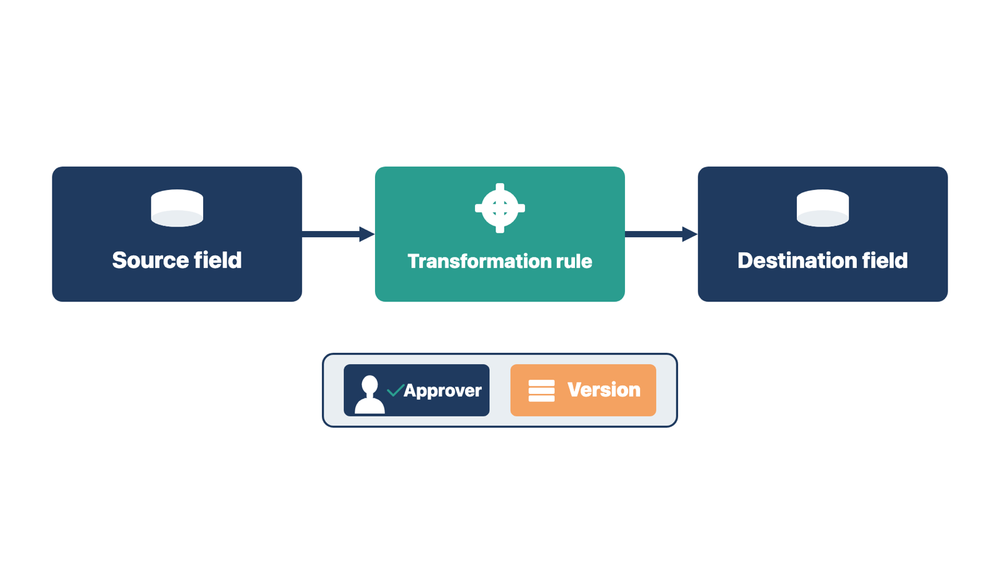
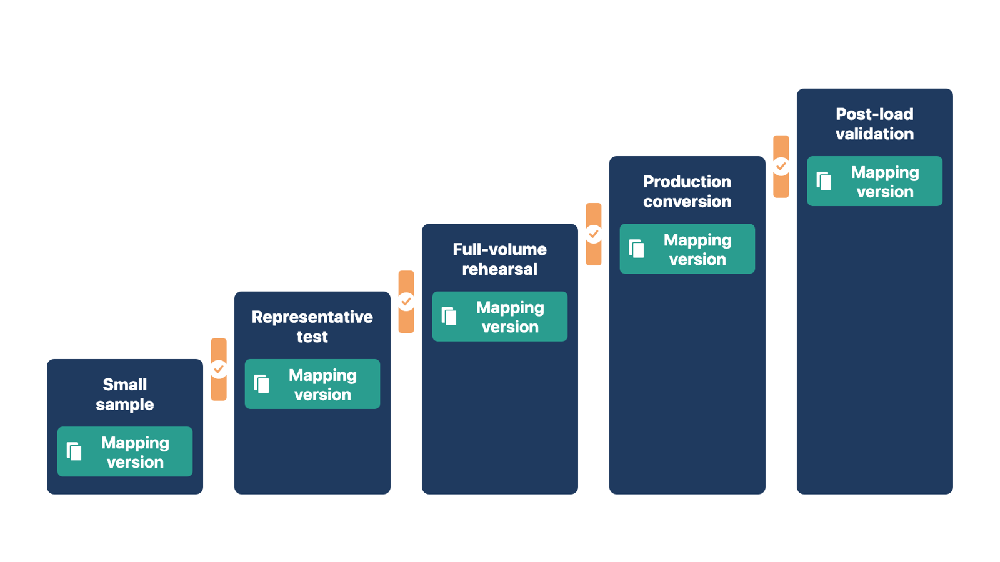

Two fields with the same name can mean different things. A wrong mapping can put true data in a place where staff will read it the wrong way.
The mapping workbook records how each source item becomes a destination item. A transformation rule is the written instruction for changing a value on the way. For each item, record:
Do not force a mapping because two fields have similar names. "Status," "provider," "owner," "date," or "balance" may mean different things in each system. If no safe destination exists, send the decision to the data owner. Approved archive access is often safer than putting information in a misleading field.
That last mark is called provenance: a record of where information came from.
Every transformation should give the same result each time it runs. Give each version of the workbook a number.

In both cases the field names or codes matched. The meanings did not.
Check yourself
Conversion copies large amounts of patient data into new places. Each copy, error file, and staging area is a new way for that data to leak.
Staging is a temporary holding area where data waits between extraction and loading. Plan security for extraction, transfer, staging, validation, error handling, backups, and final disposal.
Write down:
HIPAA is the U.S. Health Insurance Portability and Accountability Act. Its rules protect health information. For HIPAA-covered work, the client and its business associates decide and document their own duties. A business associate is an outside company that handles protected health information for the clinic. Their duties include agreements, risk analysis, safeguards, access, audit, availability, and breach response.
A cloud provider that stores electronic protected health information may be a business associate. This is true even if the data is encrypted and the provider has no key. Use current guidance from the U.S. Department of Health and Human Services (HHS) and the clinic's privacy and legal review.
Rule: Every copy of converted data needs a protected place, a limited set of users, and a planned end.
Check yourself
The first load almost never works. Repeated test runs let the team find and fix mapping problems before the real go-live load.
Use a non-production environment, or an approved test area kept apart from live work. A well-run conversion usually includes:
Each run uses a controlled mapping version and produces:
Do not change mappings during a run without version control. The team must know which rules gave which result.

Check yourself
A clean load report shows that records moved. It does not show that they are right, linked, or usable. Owners must check the data they understand.
Validation asks whether the converted information is complete, accurate, correctly linked, usable, visible to the right roles, and fit for its approved purpose. Reconciliation means comparing numbers from the source and destination and explaining every difference.
Use several methods together:
| Method | What you do |
|---|---|
| Count reconciliation | Compare source, extracted, loaded, rejected, skipped, and duplicate counts for each group. Explain every difference. |
| Control totals | Compare totals that matter: balances, payments, open items, appointments, documents. A matching total does not prove each record is right. A total that does not match shows a problem. |
| Field and relationship checks | Check values, formats, translations, cut-off text, IDs, documents, and links. Include normal, incomplete, edge, duplicate, and high-risk examples. |
| Business scenario checks | Use converted records in approved workflows. Can staff find the right record, see where it came from, continue an open task, find a document, post a payment, and take the next step? |
| Access and audit checks | Confirm the right roles can see what they need and are blocked from restricted records. Check source, author, date, approval, and audit details. |
| Client validation | Named business owners validate the information they understand. Technical success is not client acceptance. |
Rule: Explain every count difference, then let the named owners validate what they understand.
The counts caught one problem. Only an owner using the data caught the other.
Check yourself